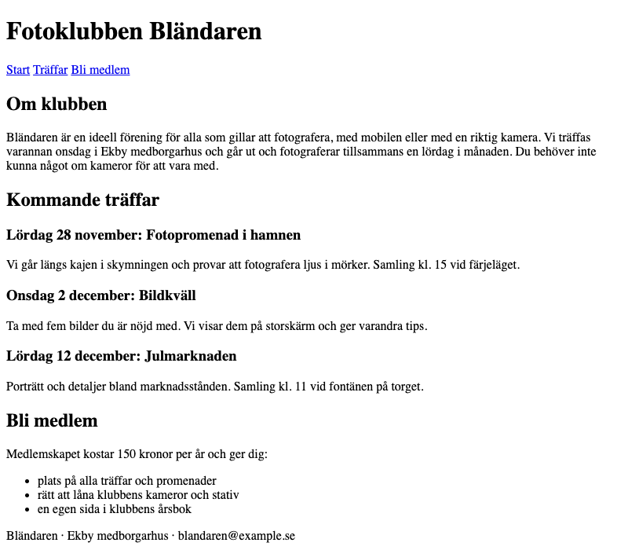

Övning R1 · Städa strukturen
Läs så här: Välj en nivå per etapp: 🟢 Grön ger dig varje steg, 🔵 Blå säger vad som behövs men inte koden, 🔴 Röd ger bara kravet. Etapperna är desamma på alla nivåer, så du kan byta nivå mellan etapperna (och mitt i om du fastnar). Varje etapp slutar med Så vet du att etappen är klar: kontrollera den innan du går vidare. Längst ner finns Vanliga fel och, om du vill ha mer, ⚫ Svart.
Du bygger: Fotoklubben Bländaren har redan en startsida, men den som skrev koden använde <div> till allt. En div är en låda utan betydelse: den säger ingenting om vad som ligger i den. Du byter lådorna mot semantiska element, alltså element vars namn säger vad innehållet är (sidhuvud, meny, huvudinnehåll, sidfot), och rättar rubrikerna så att de kommer i rätt ordning. Sidan ser nästan likadan ut efteråt, men nu kan en skärmläsare (programmet som läser upp sidan för den som inte ser skärmen) hoppa direkt till menyn eller till huvudinnehållet.

Du behöver: mappen ovningar från i tisdags, öppen i VS Code, och Live Server. Mappen r1-start, som ligger som zip-fil bredvid den här övningen i Learnpoint. Klipp 3 (semantisk HTML) sett.
Etapp 1 · Hämta sidan och titta under huven
Varför: innan du städar behöver du se vad som är rörigt.
🟢 Grön · Steg för steg
- Hämta
r1-start.zipfrån Learnpoint och packa upp den. På Mac dubbelklickar du på zip-filen. På Windows högerklickar du på den och väljer Extrahera alla (Extract All). Nu har du en vanlig mapp som heterr1-start. - Dra mappen
r1-startfrån Finder (Mac) eller Utforskaren (Windows) och släpp den på OVNINGAR i filpanelen i VS Code (listan över filerna, till vänster). - Klicka på pilen framför
r1-starti filpanelen. Där liggerindex.html. - Högerklicka på
index.htmlunderr1-startoch välj Open with Live Server. Sidan öppnas i Chrome. - Titta på sidan. Klubbens namn överst är liten fet text, och Lördag 28 november: Fotopromenad i hamnen är den största rubriken på hela sidan. Så ska det inte se ut.
- Högerklicka på texten Fotoklubben Bländaren i Chrome och välj Inspektera (Inspect). DevTools öppnas med fliken Elements, som visar sidans element som ett träd. Klicka på de små pilarna framför elementen: allt under
<body>är<div>. - Klicka på
index.htmlunderr1-starti filpanelen i VS Code, så att filen öppnas. Radnumren står längst till vänster. Alla radnummer i den här övningen gäller den filen, och de ändras inte när du följer stegen, eftersom du bara byter ut taggar och aldrig lägger till eller tar bort rader.
🔵 Blå · Med ledtrådar
Packa upp r1-start.zip från Learnpoint och lägg mappen r1-start i ovningar. Öppna r1-start/index.html med Live Server. Titta i DevTools, fliken Elements, vilka element som ligger direkt under body. Leta sedan i koden efter rubrikerna: vilka nivåer (h1, h2, h3) har de, och vilka "rubriker" är bara fet text (strong) i en div?
🔴 Röd · Bara kravet
Öppna startfilen i Chrome och ta reda på hur den är uppbyggd: vilka element som används och vilka rubriknivåer som finns.
/r1-start/index.html. I DevTools → Elements ser du att allt direkt under <body> är <div>.Etapp 2 · Sidhuvud och meny
Varför: header och nav talar om var sidhuvudet och menyn finns, så att en skärmläsare kan hoppa dit direkt.
<header> är sidhuvudet: det som står överst, oftast namnet och menyn. <nav> (av engelskans navigation) är menyn: en grupp länkar till sidans andra delar. <h1> är sidans huvudrubrik, och det ska bara finnas en.
🟢 Grön · Steg för steg
Varje div har en starttagg <div> och en sluttagg </div>. Byter du den ena måste du byta den andra också. Indraget hjälper dig: starttaggen och dess sluttagg står lika långt in.
- Rad 8: byt
<div>mot<header>. - Rad 9: byt hela raden
<div><strong>Fotoklubben Bländaren</strong></div>mot<h1>Fotoklubben Bländaren</h1>. - Rad 10: byt
<div>mot<nav>. - Rad 14: byt
</div>mot</nav>. - Rad 15: byt
</div>mot</header>. - Rad 8–15 ser nu ut så här:
<header>
<h1>Fotoklubben Bländaren</h1>
<nav>
<a href="index.html">Start</a>
<a href="traffar.html">Träffar</a>
<a href="bli-medlem.html">Bli medlem</a>
</nav>
</header>- Spara med Cmd+S (Mac) eller Ctrl+S (Windows). Live Server laddar om sidan i Chrome av sig själv.
Länkarna Träffar och Bli medlem går till sidor som inte finns i övningen. Klickar du på dem visar Live Server Cannot GET. Det är väntat, gå tillbaka med bakåtpilen.
🔵 Blå · Med ledtrådar
Det yttersta blocket överst (rad 8–15) är sidhuvudet och ska bli header. Klubbnamnet ska bli sidans h1 i stället för fet text i en div. Lådan med de tre länkarna ska bli nav. Byt både starttagg och sluttagg varje gång.
🔴 Röd · Bara kravet
Sidhuvudet med klubbnamnet och menyn ska vara uppmärkt med semantiska element, och klubbnamnet ska vara sidans huvudrubrik.
<header> först under <body>, och i den ligger <h1> och <nav>.Etapp 3 · Huvudinnehållet och avsnitten
Varför: main visar var sidans eget innehåll finns, och section delar in det i avsnitt med var sin rubrik.
<main> är huvudinnehållet: det som är unikt för just den här sidan, alltså inte sidhuvudet och inte sidfoten. Det finns en main per sida. <section> är ett avsnitt, en del av sidan som handlar om en sak och har en egen rubrik. Rubrikerna fungerar som en innehållsförteckning: h1 är sidans rubrik, h2 är avsnittens rubriker och h3 är rubriker inuti ett avsnitt. Du hoppar aldrig över en nivå.
🟢 Grön · Steg för steg
- Rad 16: byt
<div>mot<main>. Rad 59: byt</div>mot</main>. - Rad 17: byt
<div>mot<section>. Rad 25: byt</div>mot</section>. - Rad 18: byt
<h3>Om klubben</h3>mot<h2>Om klubben</h2>. - Rad 26: byt
<div>mot<section>. Rad 49: byt</div>mot</section>. - Rad 27: byt hela raden
<div><strong>Kommande träffar</strong></div>mot<h2>Kommande träffar</h2>. - Rad 50: byt
<div>mot<section>. Rad 58: byt</div>mot</section>. - Spara. De rader du ändrat ser nu ut så här (
…står för raderna emellan, som du inte rör):
<main>
<section>
<h2>Om klubben</h2>
…
</section>
<section>
<h2>Kommande träffar</h2>
…
</section>
<section>
<h2>Bli medlem</h2>
…
</section>
</main>🔵 Blå · Med ledtrådar
Lådan som omsluter allt mellan sidhuvudet och sidfoten (rad 16–59) ska bli main. De tre lådorna i den (Om klubben, Kommande träffar, Bli medlem) ska bli var sin section. Varje avsnitt börjar med en h2: Om klubben är i dag en h3, och Kommande träffar är bara fet text i en div. Bli medlem har redan rätt nivå.
🔴 Röd · Bara kravet
Sidans huvudinnehåll och dess tre avsnitt ska vara uppmärkta med semantiska element, och varje avsnitt ska ha en rubrik på rätt nivå.
<header>, <main> och en <div> direkt under <body>, och i <main> ligger tre <section>.Etapp 4 · Träffarna som artiklar
Varför: varje träff är en fristående del som går att förstå även om den lyfts ut ur sidan, och då är article rätt element.
<article> är en fristående bit innehåll, till exempel ett inlägg, en nyhet eller ett evenemang. En träff har eget datum, egen rubrik och egen text, så den kan stå för sig själv.
🟢 Grön · Steg för steg
- Rad 28: byt
<div>mot<article>. Rad 34: byt</div>mot</article>. - Rad 29: byt
<h1>Lördag 28 november: Fotopromenad i hamnen</h1>mot<h3>Lördag 28 november: Fotopromenad i hamnen</h3>. - Rad 35: byt
<div>mot<article>. Rad 41: byt</div>mot</article>. - Rad 36: byt
<h2>Onsdag 2 december: Bildkväll</h2>mot<h3>Onsdag 2 december: Bildkväll</h3>. - Rad 42: byt
<div>mot<article>. Rad 48: byt</div>mot</article>. - Rad 43: byt hela raden
<div><strong>Lördag 12 december: Julmarknaden</strong></div>mot<h3>Lördag 12 december: Julmarknaden</h3>. - Spara. Rad 26–49 ser nu ut så här:
<section>
<h2>Kommande träffar</h2>
<article>
<h3>Lördag 28 november: Fotopromenad i hamnen</h3>
<p>
Vi går längs kajen i skymningen och provar att fotografera ljus i
mörker. Samling kl. 15 vid färjeläget.
</p>
</article>
<article>
<h3>Onsdag 2 december: Bildkväll</h3>
<p>
Ta med fem bilder du är nöjd med. Vi visar dem på storskärm och ger
varandra tips.
</p>
</article>
<article>
<h3>Lördag 12 december: Julmarknaden</h3>
<p>
Porträtt och detaljer bland marknadsstånden. Samling kl. 11 vid
fontänen på torget.
</p>
</article>
</section>🔵 Blå · Med ledtrådar
De tre lådorna inuti Kommande träffar ska bli var sin article. Varje träffs rubrik ska vara en h3, en nivå under avsnittets h2. I dag är de en h1, en h2 och fet text i en div.
🔴 Röd · Bara kravet
Varje träff ska vara en fristående del av avsnittet och ha en rubrik en nivå under avsnittets rubrik.
<article> i den andra <section>.Etapp 5 · Sidfoten och slutkontrollen
Varför: footer markerar sidfoten, och en sista sökning visar att ingen div blev kvar.
<footer> är sidfoten: det som står längst ner, till exempel adress och kontaktuppgifter.
🟢 Grön · Steg för steg
- Rad 60: byt
<div>mot<footer>. Rad 62: byt</div>mot</footer>. - Spara.
- Sök efter
divi filen: tryck Cmd+F (Mac) eller Ctrl+F (Windows) i VS Code och skrivdiv. Sökrutan ska visa No results. Stäng sökrutan med Esc. - Gå till Chrome. I DevTools → Elements ligger nu
<header>,<main>och<footer>direkt under<body>. - Hela filen ser ut så här. Jämför rad för rad om något ser konstigt ut:
<!doctype html>
<html lang="sv">
<head>
<meta charset="utf-8">
<title>Fotoklubben Bländaren</title>
</head>
<body>
<header>
<h1>Fotoklubben Bländaren</h1>
<nav>
<a href="index.html">Start</a>
<a href="traffar.html">Träffar</a>
<a href="bli-medlem.html">Bli medlem</a>
</nav>
</header>
<main>
<section>
<h2>Om klubben</h2>
<p>
Bländaren är en ideell förening för alla som gillar att fotografera,
med mobilen eller med en riktig kamera. Vi träffas varannan onsdag i
Ekby medborgarhus och går ut och fotograferar tillsammans en lördag i
månaden. Du behöver inte kunna något om kameror för att vara med.
</p>
</section>
<section>
<h2>Kommande träffar</h2>
<article>
<h3>Lördag 28 november: Fotopromenad i hamnen</h3>
<p>
Vi går längs kajen i skymningen och provar att fotografera ljus i
mörker. Samling kl. 15 vid färjeläget.
</p>
</article>
<article>
<h3>Onsdag 2 december: Bildkväll</h3>
<p>
Ta med fem bilder du är nöjd med. Vi visar dem på storskärm och ger
varandra tips.
</p>
</article>
<article>
<h3>Lördag 12 december: Julmarknaden</h3>
<p>
Porträtt och detaljer bland marknadsstånden. Samling kl. 11 vid
fontänen på torget.
</p>
</article>
</section>
<section>
<h2>Bli medlem</h2>
<p>Medlemskapet kostar 150 kronor per år och ger dig:</p>
<ul>
<li>plats på alla träffar och promenader</li>
<li>rätt att låna klubbens kameror och stativ</li>
<li>en egen sida i klubbens årsbok</li>
</ul>
</section>
</main>
<footer>
<p>Bländaren · Ekby medborgarhus · blandaren@example.se</p>
</footer>
</body>
</html>När du sparar lägger Prettier till / sist i <meta charset="utf-8">, så att det blir <meta charset="utf-8" />. Det är ofarligt och betyder samma sak.
🔵 Blå · Med ledtrådar
Den sista lådan (rad 60–62) är sidfoten och ska bli footer. Sök sedan efter div i filen med VS Code:s sökfunktion (Cmd+F / Ctrl+F): det ska inte finnas någon kvar. Kontrollera i DevTools → Elements vilka element som ligger direkt under body.
🔴 Röd · Bara kravet
Sidfoten ska vara uppmärkt med ett semantiskt element. Det får inte finnas någon div kvar i filen, och sidan ska se ut som slutbilden.
div i VS Code ger No results. DevTools → Elements visar <header>, <main> och <footer> direkt under <body>. Sidan ser ut som slutbilden: en stor rubrik överst, tre lika stora avsnittsrubriker och tre lika stora, mindre träffrubriker.⚫ Svart · Utöka (frivilligt, utan facit)
Gör länken Träffar sann: skapa traffar.html i r1-start med samma header och nav som startsidan och en main där varje träff är en article. Fundera sedan på om avsnittet Bli medlem också borde vara en article. Vad talar för, och vad talar emot?
Vanliga fel
- Sidan ser konstig ut efter att du sparat, och Prettier ändrar inte indraget längre: du har bytt en starttagg men inte dess sluttagg (eller tvärtom), så taggarna går inte ihop. Prettier kan inte formatera en fil där taggarna inte går ihop, och det står ett fel vid Prettier längst ner i VS Code. Leta upp paret: starttaggen och sluttaggen står lika långt in. Rätta och spara igen.
- Två eller tre rubriker är lika stora som klubbnamnet: någon träffrubrik är fortfarande en
h1ellerh2. Det ska finnas exakt enh1på sidan, och träffarna ska varah3. - Du klickar på Träffar eller Bli medlem och får Cannot GET: sidorna finns inte i övningen. Det är väntat och inget fel i din kod. Gå tillbaka med bakåtpilen.